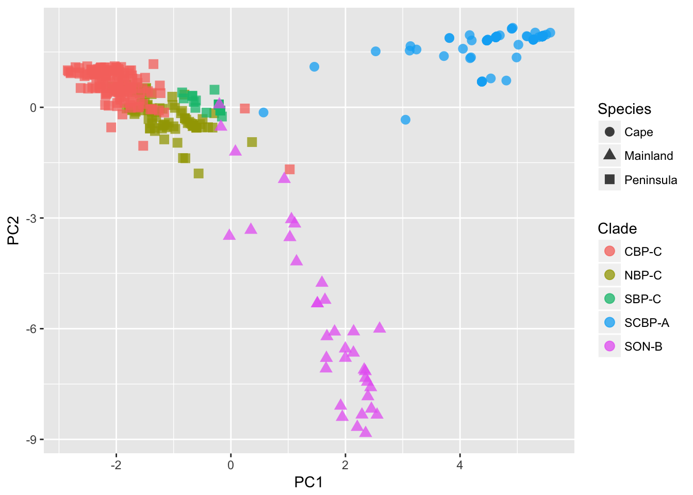

24 Ordination of Genetic Data

There are several ways that we can look for natural groupings in our data. Barriers and sources of vicariance across the landscape create discontinuities in the genetic structure. As we begin to analyze the spatial structure of the data itself, one of the first things that needs to be done is to allow the data to tell the analyst how it is internally structured. This is a deviation from common approaches in statistical analyses. Typically, we start with a model and then see the extent to which the data fit into a model framework, potentially testing many different models. However, just because you get a significant model does not mean it is the best or even the correct one describing the underlying processes. In Dyer & Nason (2004), we examined the spatial genetic structure of Lophocereus schottii (Cactaceae) and found that while the Sea of Cortéz has acted to separate mainland populations from those on peninsular Baja California, there is a particular population at the very northern extent of the range that is really a peninsular population even though it is spatially on the mainland. The differences, in aggregate, between peninsula and mainland populations are so large that even if we allocated an individual stratum into the wrong region, we still were able to derive a significant model. This is where model-free approaches are most powerful, they let the data tell us how it is distributed as opposed to asking if there is enough structure to fit into some pre-conceived model.
A popular way to examine how individuals and populations are configured is to use an ordination approach or apply a multivariate rotation on the data. In what follows, I’ll describe a principal components analysis (though it is not really an analysis, it is more of a projection). These approaches are common in multivariate statistics and have very little to do with population genetic processes or assumptions. Fortunately, there are several approaches amenable to transforming population genetic data into a form that is usable in normal multivariate statistics, the one used most often is discretizing the data. To demonstrate, consider the case where we have four individuals genotyped for a single locus as depicted below.
library(gstudio)
x <- c( locus(c(1,2)), locus( c(1,1) ), locus(c(1,3)), locus(c(3,3)))
x## [1] "1:2" "1:1" "1:3" "3:3"We can convert these data into a matrix of data, where each row in the matrix represents an individual and each column determines the frequency of alleles in that individuals genotype. In this case, the resulting matrix should have four rows (one for each individual) and three columns (one for each of the three alleles present in the whole data). This conversion is done using the function to_mv().
X <- to_mv(x)
X## 1 2 3
## [1,] 0.5 0.5 0.0
## [2,] 1.0 0.0 0.0
## [3,] 0.5 0.0 0.5
## [4,] 0.0 0.0 1.0When using multiple loci, we can essentially bind onto this matrix additional columns of predictor variables. This matrix can be used as an input to most multivariate analyses. Depending upon the analysis being used, you may need to modify it a bit. Many statistical approaches require that you invert the covariance matrix. For example, the regression coefficients are found as:
\[ \beta = (X'X)^{-1}X'Y \]
where the \(X\) matrix is the predictor data and the \(Y\) is the response variables. That \((\cdot)^{-1}\) exponent represents inversion of the matrix resulting from the multiplication. The problem with the above [~] matrix derived from the genotypes is that the rows are all linearly related in that they all sum to unity.
rowSums(X)## [1] 1 1 1 1which is a problem for matrix inversion as it throws a zero into the mix and dividing by zero is still a problematic endeavor. To fix this, we need to drop a column from each locus we use to estimate. This is an optional flag in the to_mv() function.
X <- to_mv(x,drop.allele = TRUE)
X## 1 2
## [1,] 0.5 0.5
## [2,] 1.0 0.0
## [3,] 0.5 0.0
## [4,] 0.0 0.0Once we have the proper data, we can do a principal component (PC) rotation. A PC rotation is one that takes the original columns of data and performs a rotation on the values to align onto new ‘synthetic’ axes. Consider the example in the next figure. Here, some bivariate data is plot in 2-space, though this can be done for much higher dimensions of data as well—in fact it is more beneficial with more columns of data and this can be used as a way of reducing the dimensionality of the data while loosing very little (or no) content (more later on this). The axes of a PC rotation are taken as linear combinations of the existing axes and define a new coordinate set onto which the points are plot. All points are rigidly constrained to keep the same relationship and there is no loss of information. The PC axes are defined by determining the most variable stretch through the data. In the figure on the next page, we see the raw data plot onto the X- and Y-axes. The axis of highest variance does not align with either of the original ones, and instead can be defined as a combination of both X- and Y- coordinates. If we take the blue axis as the first PC axis, the coordinate of the points would be taken along that new synthetic axis. The next PC axis is defined as being perpendicular to the previous one(s) and is identified as covering the largest variance in the data as before. This process continues until there are no more axes. In our case, the second axis would be at a right angle from the blue line (above). You can, at maximum, have as many PC axes as there are columns of data. However, the later axes may not explain any significant chunk of the underlying data, the process of rotating based upon axes of maximal variation may be able to capture the complete dataset with fewer axes than the total set. This is where a technique like this may be helpful in reducing the dimensionality of the data.
To perform this on genetic data, we first translate the raw genotypes into multivariate data, dropping an allele from each locus.
data(arapat)
x <- to_mv(arapat, drop.allele = TRUE)The full arapat data, with 363 individuals has 50 independent allele columns to it, after dropping one for each locus. Passing this to the princomp() function we get the results.
fit.pca <- princomp(x, cor = TRUE)Here are the first 8 (out of 50 potential) axes for the arapat data set.
summary(fit.pca)## Importance of components:
## Comp.1 Comp.2 Comp.3 Comp.4
## Standard deviation 2.6637669 2.17988216 1.8194765 1.69808902
## Proportion of Variance 0.1419131 0.09503772 0.0662099 0.05767013
## Cumulative Proportion 0.1419131 0.23695080 0.3031607 0.36083083
## Comp.5 Comp.6 Comp.7 Comp.8
## Standard deviation 1.30595140 1.25287928 1.21993222 1.20493238
## Proportion of Variance 0.03411018 0.03139413 0.02976469 0.02903724
## Cumulative Proportion 0.39494101 0.42633514 0.45609983 0.48513707
## Comp.9 Comp.10 Comp.11 Comp.12
## Standard deviation 1.18746000 1.14296176 1.11208568 1.09678573
## Proportion of Variance 0.02820123 0.02612723 0.02473469 0.02405878
## Cumulative Proportion 0.51333830 0.53946553 0.56420022 0.58825900
## Comp.13 Comp.14 Comp.15 Comp.16
## Standard deviation 1.0837943 1.06056730 1.03893878 1.0244877
## Proportion of Variance 0.0234922 0.02249606 0.02158788 0.0209915
## Cumulative Proportion 0.6117512 0.63424726 0.65583513 0.6768266
## Comp.17 Comp.18 Comp.19 Comp.20
## Standard deviation 1.02114378 1.00993094 0.9979831 0.99607657
## Proportion of Variance 0.02085469 0.02039921 0.0199194 0.01984337
## Cumulative Proportion 0.69768133 0.71808054 0.7379999 0.75784331
## Comp.21 Comp.22 Comp.23 Comp.24
## Standard deviation 0.95870367 0.93685791 0.91638608 0.91262078
## Proportion of Variance 0.01838225 0.01755405 0.01679527 0.01665753
## Cumulative Proportion 0.77622557 0.79377962 0.81057489 0.82723242
## Comp.25 Comp.26 Comp.27 Comp.28
## Standard deviation 0.8906936 0.86951674 0.86619082 0.81902841
## Proportion of Variance 0.0158667 0.01512119 0.01500573 0.01341615
## Cumulative Proportion 0.8430991 0.85822031 0.87322604 0.88664219
## Comp.29 Comp.30 Comp.31 Comp.32
## Standard deviation 0.79160212 0.77846983 0.73738260 0.71024440
## Proportion of Variance 0.01253268 0.01212031 0.01087466 0.01008894
## Cumulative Proportion 0.89917487 0.91129518 0.92216984 0.93225878
## Comp.33 Comp.34 Comp.35 Comp.36
## Standard deviation 0.690065021 0.670553267 0.634366536 0.622844746
## Proportion of Variance 0.009523795 0.008992834 0.008048418 0.007758712
## Cumulative Proportion 0.941782576 0.950775409 0.958823827 0.966582539
## Comp.37 Comp.38 Comp.39 Comp.40
## Standard deviation 0.575373600 0.536515044 0.508130100 0.451602554
## Proportion of Variance 0.006621096 0.005756968 0.005163924 0.004078897
## Cumulative Proportion 0.973203635 0.978960602 0.984124526 0.988203424
## Comp.41 Comp.42 Comp.43 Comp.44
## Standard deviation 0.431084834 0.355831681 0.293272519 0.253948586
## Proportion of Variance 0.003716683 0.002532324 0.001720175 0.001289798
## Cumulative Proportion 0.991920106 0.994452430 0.996172605 0.997462403
## Comp.45 Comp.46 Comp.47 Comp.48
## Standard deviation 0.232386474 0.1725980744 0.140118702 0.1114152870
## Proportion of Variance 0.001080069 0.0005958019 0.000392665 0.0002482673
## Cumulative Proportion 0.998542473 0.9991382745 0.999530940 0.9997792069
## Comp.49 Comp.50
## Standard deviation 0.0914260473 5.177774e-02
## Proportion of Variance 0.0001671744 5.361868e-05
## Cumulative Proportion 0.9999463813 1.000000e+00This output has two important components to it. First, it shows the axes, in decreasing order of importance and how much of the total variation they describe. The first Comp.1 axis explains 14.2% of the variance, the second explains 9.5%, etc. Second, it shows the cumulative proportion of the variation explained. From the 50 axes we started with, we can explain 49% of the variance by using just the first eight PC axes.
Where this becomes meaningful for us is in how we can project our original data onto these new coordinate locations and look at the distribution to see if there are any obvious trends, partitions, gradients, etc.
library(ggplot2)
pred <- predict(fit.pca)
df <- data.frame(PC1 = pred[, 1], PC2 = pred[, 2])
df$Species <- arapat$Species
df$Clade <- arapat$Cluster
df$Pop = arapat$Population
ggplot(df) + geom_point(aes(x = PC1, y = PC2, shape = Species, color = Clade), size = 3, alpha = 0.75)
We can see from the plot (I’ve added some designations to the points) that the 363 samples are clustered in an obvious way. The designation of ‘Species’ as depicted by the shape of the points, is defined by the mtDNA clade for each individual, independent of the nuclear marker data we are using here. Still, it shows a broad separation between the Cape, Mainland, and Peninsula groups. The colors of the points found within the Peninsula group, come more formal clustering approaches, as defined in the next two sections.
24.1 Hierarchical Clustering
In the previous section, we defined a new coordinate space for all individuals in the dataset. The rotation of the 50 allele encoding columns was able to describe over 95% of the observed variation using only the first 34 PC axes. In this section, we are going to use the rotated coordinates to evaluate population-level differences using a hierarchical clustering method. Hierarchical clustering are very helpful in understanding groupings in the data, particularly if there is a ‘nesting’ structure. While there are many ways to do it, they all generally proceed as follows:
1. Define a numeric metric that measured the distances between all K groups.
2. Find the two groups that have the smallest distance and coalesce them together into a pair.
3. Assume that the coalesced pair now constitutes a single entity, estimate the numeric metric among all K-1 groups in the data set.
4. Go to #2 and repeat until you have coalesced all the groups together.
Here again, it is the data that is telling us how it is structured rather than us imposing a model onto the data to see if it fits.
To do this, the rotated coordinates are used to define the centroid of each population. Here I use the tapply() function as a short-cut to estimate the mean of each population. If you are not familiar with this approach, it essentially applies a particular function (in this case taking the mean), to a set of data in a matrix (the predicted coordinates from the PCA) based upon a set of factor levels (the populations). This is quite an efficient way to do what would take you a bit of looping to get through.
p <- ncol(pred)
pops <- arapat$Population
pop.means <- tapply( pred, list(rep(pops,p),col(pred)),mean)
dim(pop.means)## [1] 39 50The result is a matrix where each row represents a population and each column represents the mean location of all individuals for each of the 50 PCA axes variables. These 50-dimensional coordinates can be used to define a pairwise distance metric using the dist() function. By default, this measures the euclidean distance (e.g., straight-line distance) between each populations 50-dimensional coordinate.
pop_pw <- dist(pop.means)
h <- hclust( pop_pw)
plot(h)
The plot of this shows the nesting structure of the populations as depicted in the PC-derived data.
There are some interesting things to notice here.
- The main separation between mainland populations (32, 101, 102) and peninsular populations (the rest) seems to be the largest difference. As indicated in the mtDNA (not used for this analysis), there seems to be a clear division between those two groups, consistent with the idea that the Sea of Cortéz has acted as a source of vicariance. - There seems to be a deep division within the peninsular populations separating out the group of populations including 98, Mat, 157, 73, 75, Aqu, ESan, 156, and 48. If we look at where these populations are found, we see that they are all located in the southern portion of Baja California—the Cape groupings… - Then there is the rest of the populations, some of which appear to be partitioned into at least two groups, though there may be more.
This approach is pretty good at pulling apart components within the data set that represent different genetic clusters.
24.2 Interactive Tree Display
Another network approach that could be used is defining bifurcating networks. Here we will examine the A. attenuatus data set using Nei’s genetic distance metric.
\[ D_{nei} = -\ln( L ) \]
where
\[ L = \frac{\sum_l\sum_u x_uy_u}{\sqrt{(\sum_l\sum_u x_u^2)(\sum_l\sum_u y_u^2)}} \]
I make the among stratum distance matrix and then turn it into a dist object to do a hierarchal clustering on the populations. I then plot it and make the node colors equal to the grouping of the dendrogram if there were 4 groups in the dataset. This is also zoomable, for large trees, so if you want to figure out the relationships at the leaves, where the internal edges are smaller, zoom in with the mouse.
library(networkD3)
d <- genetic_distance(arapat,stratum = "Population", mode="Nei")
d <- as.dist( d )
hc <- hclust(d)
dendroNetwork(hc, height=600,
zoom=TRUE,
textColour = c("red","green","orange","blue")[ cutree(hc,4)])